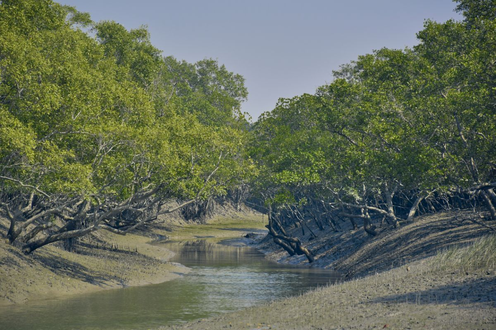

Among other things, it is the unique geography of Sunderbans which endears it to the tourists. It is a part of the world’s largest delta and home to the largest mangrove forests. In its brackish waters, mudflats and trees, reside an incredible variety of flora and fauna. It is these, along with the vegetation, that makes this place what it is, a mystery which unfolds itself with every single visit. The vast Sunderbans also houses within it rivers, islands and villages.
Flora:
Inside the dense forests of Sunderbans National Park reside a rich variety of flora. The 64 plant species which are found however, have learned to survive in brackish waters and saline inundation. Some of the common species of plants which are found include Sundari tree, Golpati, Champa, Dhundul, Genwa and Hatal. It is estimated that there are about 78 species of mangroves in these forests. They are extremely important because of the important role they play in the survival of marine organisms. From a distance, these halophytes exude an aura of mystery, who knows what the darkness within has to offer.
Fauna:
Wildlife tourism is a major factor behind tourists visiting Sunderbans, and rightly so. After all, you’ve heard that it is home to a rich variety of wildlife, with the Royal Bengal Tigers enjoying a large presence. Nothing makes the tourists more excited than a tiger sighting. While that majestic cat certainly deserves all the attention and spotlight, there are other kinds of birds and wildlife animals who call these mangrove forests their home.
Apart from the Royal Bengal Tiger, other animals found in these areas are fishing cats, macaques, leopard cats, Indian grey mongoose, wild boar, flying fox, pangolin, and Indian grey mongoose. The chital deer and rhesus monkey are common sightings.
Sundarban is also famous for its marine life, and is quite rich in it. A crocodile seated leisurely on a mudflat, basking in the afternoon sun, draws an array of reactions from onlookers. Other than the saltwater crocodile, other kinds of aqua life include red fiddler crabs and hermit crabs. While many people may not be aware of it, but Sundarban National Park is home to a large number of reptiles. Some of the more famous ones are water monitor, king cobra and rock python.
A species of river turtles called Batagur Baska (which are classified as endangered by the IUCN) are found on the Mechau Beach. They are identified by their small head, a snout which always goes upwards and an olive brown colored carapace. The barking deer also deserves a special mention, as it is found at a place called Haliday Island.
Rivers:
The Sundarbans delta is formed by the coming together of three rivers, Ganga, Brahmaputra and Meghna. Besides these three main rivers, there are three other rivers which form an intriguing network of channels.
Islands:
There are a number of islands dotting this region, and some of them are attractions in themselves. The most famous of them are Kalash, Henry and Netidhopani.
Villages:
A number of villages lie in close proximity to Sunderbans National Park like Pakhiralay, Dayapur, Bali and Sajnekhali. Village walks are popular among tourists because they offer a glimpse into the traditional lifestyle of the villagers. While visiting one of these villages, you can also observe the traditional method of honey collection.
Best time to visit – October-Number
Ideal duration – 1-2 days (more, if you are an avid nature lover)
How to reach –
By Air: Kolkata is the nearest airport (101 km) to Sundarbans.
By Train: One can take either take a train from Canning, located 48 km away from the forest.
By Road: A lot of buses ply from Kolkata (101 km) on a daily basis.
Location:
The Sundarban National Park is located between 21° 432′ – 21° 55′ N latitude and between 88° 42′ – 89° 04′ E longitude. The average altitude of the park is 7.5 m above sea level. The park is composed of 54 small islands and intersected by several distributaries of the Ganges river.

Tourism:
Known for hosting the biggest mangrove forests in the world, Sundarbans National Park is located in West Bengal, India. It is also a Tiger Reserve and a Biosphere reserve that provides a complete nature's circle to the tourist right from 'Royal Bengal tigers' to roaring rivers and beautiful estuaries. Sundarbans National Park is a part of Sundarban delta that is covered with Mangrove Forest and the largest population of the Bengal Tigers. It is a UNESCO world heritage site with a large variety of birds and reptiles including salt-water crocodile.
Shared between India and Bangladesh, the Sundarbans meaning beautiful forest, have been declared a UNESCO heritage site. This area has a silent charm that manages to amaze one with the simplicity and naturalness of its ecological balance in spite of offering habitat to some of the most dynamic and awe-inspiring flora and fauna. They are in fact the last remaining stands of the mighty jungles which once covered the Gangetic plain and the sustainability of this natural structure is pretty majestic. Since 1966, the Sundarbans have been a wildlife sanctuary, and it is estimated that there are over 400 Royal Bengal Tigers and about 30, 000 spotted deer in the area.
This forest has the largest number of Sundari trees. Sundarbans epitomize wilderness with its meandering rivers, springs, creeks and estuaries. It is a declared Tiger Reserve, home to the Royal Bengal Tiger- an almost extinct species who swim in the saline water and are often man-eating varieties.
Other endangered species in the Bioreserve are Batagur baska, King Crabs, Olive Ridley and Turtle. You can also find the jungle fowl, giant lizards, spotted deer, wild boar and crocodiles in these forests. The Siberian ducks are another famous attraction here. Besides this, there are over 64 varieties of Mangroves such as Goran, Genwa, Dhundal, Garjan, Kankra, Sundari and Passur. Make sure to hit the Nilkamalor Hiron Point and Katka viewpoints that offer fantastic views of animals in the wilderness. Also, enjoy the mud-flats called Chargheri Char where you can enjoy coastal trekking.
Foods:
Sundarban foods are famous for its sea and river fish. There are so many fisheries on the way to Sundarban from Kolkata. Bengali special type of Sundarban Food cuisine during a Sundarban tour like tiger prawn curry, crab curry, Hilsa fish curry is a popular dish in Sundarban. Sundarban is rich in the Bengali culture and one always has the option to go to resorts and hotels in Sundarban that serve various types of cuisines made by fish. If you hire a launch or Motorized boat for the Sundarban tour, there is always a chef present in the launch or boat. They allow tourists to have a different type of Bengali dishes in the boat itself. One special item that everyone must add in a Sundarban tour package is the Hilsa fish or as the Bengalis say “Ilish Maach”. One can try fishes, crabs and other seafood directly and freshly caught from the sea. Though they do not have any special cuisine, the various types of food items that tourists from round the globe must absolutely try are as follows:
Food is an inseparable element of culture! And if you love getting close to the cultural side of the destinations your visit, knowing and tasting the food dishes of those places would certainly help. Here are some of the most loved Sunderban food that you must also taste to know the heart of the city:
Hilsa Fish or Ilish Maach:
The Hilsa fish is a famous Sundarban food is one of the signature dishes of the Bengalis. It can be prepared as a curry or fried Bhapa Ilish is something that is exceptionally delicious and requires effortless cooking. It is prepared by steaming the hilsa fish in mustard oil, turmeric, green chili, and salt. The spicy flavor of the Bengalis is mouth-watering and the freshwater fishes make the dish even more delicious. Hilsa is considered one of the traditional Bengali dishes and one should definitely try to include a dish prepared with hilsa during a Sundarban tour package.
Chingri maacher malaikari:
Another of Bengals special dishes ids chingri maacher malaikari. It is also a non-veg dish that Bengalis truly love to have. “Chingri maach” or prawn can easily be found in the freshwater rivers of Sundarban. This dish is easily available in the resorts of Sundarban tourism department. The prawn is prepared with a creamy, coconut, delicious gravy, flavored with cinnamon and green cardamoms or Chota elichi. Both Golda chingri (giant freshwater prawn) and bagda chingri (tiger prawn) can be used for the preparation of this dish and are easily available.
Kosha mangsho:
The Bengali Mutton or Chicken Kasha or curry is another of the signature dishes of the Bengalis. This dish originated from a restaurant in Kolkata names Golbari and has been famous ever since. The dish is also available in Sundarban as the boats get their grocery for preparation of all the food items beforehand. Kosha Mangsho is a dry, slow-cooked, dark brown chicken/mutton curry served with chapattis or rice
There are several other dishes that are available in the Sundarban like Bhetki Paturi, Katla curry, etc. Tourists can also enjoy sweets like langcha, rossogolla, sitabhog, joyenogorer moya, etc.